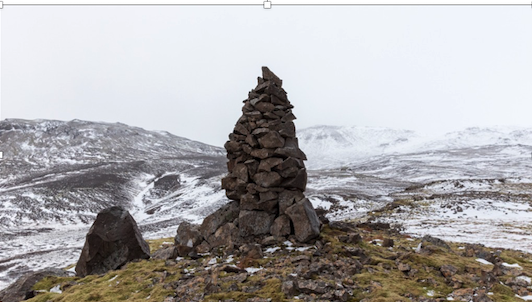

“Method,” “Data” & “Rules of Thumb”–“History,” “Bios,” “Ethos-Praxis,” “Cairn-Logic”
The reader will notice how Wild Globalization (“WG”) uses both “rules of data” learned or gathered from the sciences (e.g., volcanism, geology, climatology, biology) or the humanities (e.g., history, economics, philosophy, religion), but how it also deploys practical rules picked up by experience, by accident, from everyday trial and error, often without formal account – an intuition – a subtle trekking skill that’s not afraid to fall and then regain its footing, or as the wonderful thinker, Michael Polanyi, himself both a scientist and philosopher, named it, “tacit” knowing.[1] So you might ask yourself – “How did you learn to ride a bicycle?” Did you get it from a book, or did someone first help you along and then, voila!, you were off?[2]!
A person riding a bike with a child on the back.
Formal science shores up our thinking, it tightens and sharpens observation, it demands experimental reproduction, and it inspires communities of cross-testing interrogators. It records the status of our current knowledge (or ignorance) and advises our approach to a phenomenon or problem. Yet in its immense and impressive achievements – Apollo on the Moon, the Polio vaccine, cosmological physics – even “data-” or “theory-knowing” works with a “quiet” or “tacit” dimension, what Polanyi recognized as a “gestalt,” “an active shaping of experience,” a magical power of perception “by which all knowledge is discovered and, once discovered, is held to be true.”
True? Well, that’s the question, isn’t it? Paying it its due, we will notice that science’s best performances actually produce something other than “truth,” but rather a kind of intense rugby match of method, observations, and contested arguments rather than merely tight conclusions. We will find that science, research science especially, is not “settled.”[3] It’s not that scientific investigators merely “disagree” – rather, they are approaching a subjet of inquiry, let’s say “climate,” for example, often with very different data-gathering or theoretical methods, and those different methods often yield data-sets that don’t match up neatly or which in fact even challenge a given theory.
For example, the meterologist focuses primarily on very current data (150 years); the meterological forecaster uses computer algorithems to try to “model” past-current-future events (e.g., hurricanes, typhoons, tomorrow’s weather); and the paleo-climatologist uses “proxy” sets of chemical and geological evidence (e.g., ice cores, isotopes, ocean sediments) to try to reconstruct climate conditions over longer periods of Earth’s deep history (hundreds to thousands to millions of years). They are all researching “climate.” Sometimes they agree and other times not so much. So what? Is that such a problem? Or might it rather be an advantage because it drives their research forward and constantly calls their findings, their theories, into question? It’s quite often the “gaps” and breeches in understanding, and even the rogue thinkers, who see into and between the gaps and then open new insights.
Putting folks on the moon was a “complete story,” a hand-clapping, marvelous achievement. But researching how the Moon was formed, or how the Moon and planets in the Solar System have shaped our climate over Earth’s 4.5 billion year history, or how the Milankovitch Cycles (see “Wild Ecology”) affect climate, well, that’s not such a quick study. Instead, science and research are better read as well-orchestrated and extremely disciplined “games” that intentionally pursue various methods which then generate different data-sets, and then, delighfully, wrestling matches of interpretations, often over very well-prepared adult beverages – one of our first local micro-breweries here in Boulder Valley was started by a buch of scientists wanting British-pub quality beer instead of a standard Schlitz.
WG’s bicycle-like ride through terrains and issues will demand a firm grip on the handlebars – on the one hand an exacting grasp of the details and subtleties of data, and on the other hand a practiced and practical common sense, a healthy welcome to debate, and a subtle sense of “perception” that, possibly, at certain ecstatic moments, might let us ride hands free. Knowing, like riding a bicycle, always has a hidden, unknowable dimension, indeed, a “wildness.”
History
“History,” our deep story, often, even usually, moves ahead of civilization. WG observes that humans respond and adjust to emerging historical circumstances rather than controlling unfolding events. Though we are far removed from the savannahs and jungles, history remains “wild,” maybe even wilder, than ever.
WG has a “starting point,” a kind of presumed “beginning,” and hence an “approach,” a “point of view,” a set of biases and initial perceptions, presumptions.
“Facts” are never known as much as they are “interpreted.” History, it is said, is often “written by the victors.” WG wants to try to hear from the losers too, those under-sided facts and souls suppressed or lost to history’s triumphs and rampages, its flows. [Note: A splendid example of this cairn-loigic is found in Clint Eastwood’s and Iris Yamashita’s storytelling of the WWII Battle of Iwo Jima – first, Flags of Our Fathers recalls the American experience, and then Letters from Iwo Jima tells the Japanese story.] WG wants to explore and try to think about what is hidden in history’s annals and archives, possibly lurking beneath the surfaces of its well-lit spaces.
Living history is perhaps a bit like riding a great ocean wave to shore – you’re not “thinking” as you fly down the wave’s slope or through the barrel of its tube – in a really big 100-footer the surfer is riding and, let’s be honest, probably praying like mad – and so intuitively guessing where and how the wave is moving the board and what’s the best angle and speed to ride its momentum out. Balancing on Polanyi’s bicycle.
Understanding history, on the other hand, is like remembering what just happened – the wave is gone, it’s now just an ephemeral flash of brilliance or disaster, it’s now the foam on the sand beneath your feet. In gratitude, and maybe even ecstasy, the surfer is now “telling” the wave’s story, recounting the glorious successful ride or, just as poignantly, the disastrous wipe-out. Surfers, it would seem, live a different kind of existence, an immediate and “sudden” and, in a sense, very honest “real.” Likely they prefer to talk less of the wave and would rather just turn around and catch the next one.
How to test this?
We can discern two deep, 20th century themes, or “waves,” that forbode our 21st century’s “peril” and “prosperity.” First, history’s peril is clear and present and dangerous in the two catastrophic world wars that vanquished perhaps 75+ million souls and, quite unexpectedly, shocked and nearly crushed global civilization in the century’s first 50 years.
Yet in the century’s second half, new global prosperities emerged, if still under the threat of a cold-war nuclear shadow. The wrecked remains of Europe and Asia, along with a super-charged United States, suddenly re-set into competing global market orders – relatively “open market” models in the West and “controlled market” models in Lenin’s and Stalin’s Soviet Union and Mao’s China. Both would compete in third world boundary spaces.
As these new possibilities of prosperity emerged, though, we observe both beneficent or “intended” consequences – for example, wide-reaching economic development, the prospect of abundant nuclear power, the promise of controlling disease and famine, the exploration of the universe. At the same time, these same circumstances manifested deficient “unintended” consequences – in the West, violent civil rights movements, the Three Mile Island and Fukushima nuclear accidents, and large-scale industrial pollution, massive amounts of space junk. In the Soviet and Chinese models the facts reveal the horrors of millions of souls lost in Gulags and cultural revolutions, millions more lost to public policy triggered famines, even worse industrial pollution, and the most catastrophic human-caused environmental disaster when Chernobyl’s Number 4 nuclear reactor exploded on April 26th, 1986.
These under-currents color the “good and evil” of history’s recent 20th century path, and they shadow the portal through which the our current 21st century challenges emerge.
WG reads “intended” consequences as the ways societies try to make their way through new problems and challenges – governing leaders try to shape viable public “policies.” At the same time, we know that “unintended” consequences are ever present in the same decisions and policies – future results can be unpredictable and leaders can be foolish, arrogant, even and often corrupt. The human condition, especially as it “scales” to billions of souls on the planet, gets riskier and more vulnerable.
History, we are suggesting, is “wild” – we struggle to agree on, let alone understand, the past. We argue and debate and even fight over present policy, and we too often fail to predict the consequences of even our most well-laid plans.
WG is looking to reinvigorate critical thinking and to hunt out a renewed humility of perception.
The reader may come to see how our human story emerged in the wild spaces and shadows of human and, actually, pre-human, evolution. That is, to give the reader a peek at what lies ahead, the paleo-record seems to reveal how our proto-human ancestors vied in deadly competitions that consummated in both conception (gene-pooling) and, just as often, and more violently, in species extinctions. A bushwhacking survey of pre-historic humans reveals their mastery of fire, cooking, and tool/weapon-making (technology); the management of scarce resources and excess production of foods and fuels (economy); and most miraculously, the transformational emergence and dominance of human intelligence and language (culture). Indeed, pre-human evolution reveals the radical transformation of evolution itself. What emerges is “hyper-nature” – “organic” evolution now transformed into “innovation” evolution.
WG will explore how the human story is in fact still wild and so “hyper-natural.” We are riding a wild wave first endowed from “nature” herself. And as our powers continue to emerge and grow, the ride grows even wilder and will require our best technical and moral survival skills.
Bios
“We” – humans – that is, and all planetary life, are residents of Planet Earth. With our every breath life is global. Our home is just this fragile, gossamer thin and incredibly vulnerable layer of reality, spinning in a curiously eccentric and elliptical orbit around and at just the serendipitously exact distance from a solar center to facilitate precious biological life, this Bios. By any measure or leap of existential faith, we, and our planet, are a kind of inevitable miracle. “Inevitable” because of the likelihood that life is universal – there may be billions (upon billions…etc.) of other earth-like possibilities in the universe. A “miracle” because, when we imagine the track from the “Big Bang” to the Bios to human presence, whether we are accidental or intentional seems incidental to the elegance and splendor of this miraculous phenomenon we call “life,” perhaps perceived most intimately when we hold the new-born human child as it emerges from the womb.
We hominids are a kind protozoan-to-metazoan end-game – “we” emerged first from the oceans and then from its gardens, and still carry all the evolutionary traces of our origins.
Evolution is essentially about two magnificent and magical processes – on the one hand, survival, eking out and even flourishing an existence, and on the other hand, extinction¸ or what may appear to be extinction. That is, nearly every species that has ever graced the planet is either extinct, vanished, or, more likely, some of its DNA has passed on, “inherited,” by succeeding life-forms.
It gets wilder.
It’s thought that, of the billions, or possibly even trillion, life-forms that have ever existed on Earth, all descended from a single micro-organism or microbe stretching back perhaps 4 billion years. “That microbe is both extinct and survives in every living thing.”[4] This is the magic of reproduction, in its broadest sense, what WG will call “sex – demographics.”
Humans, as will quickly become obvious, though, are utterly unique – while we co-exist with all life-forms, our radically different version of evolution also creates risks and vulnerabilities for all other life on earth. Consequently, the secret sauce of human evolution mixes both innovation-driven survival and advancement (WG-Part I), and in the same telling, and even more critical for the planet’s survival, it must include equal or greater portions of a uniquely human moral and ethical intelligence (WG-Part II). In a word, “wisdom,” scratched from and carried down through our ancestor’s marches, their successes, their failures and errancies, even the miracles and horrors of theirs and our story.
For the moment, however, we might stretch our vision even deeper and ask, “…does a “global” inquiry stop there…or is an earth-bios itself not immersed in a Solar System, which is ensconced in a “Universe…?” Are we not then…“universal?”
Ethos & Praxis
Someone once asked Margaret Mead to identify in the fossil record what she thought was an early sign of human “civilization.” It’s said she referred to a fractured human female femur that had healed – given the time necessary for such a severe injury to mend Mead thought this ancient ancestor would not have survived without an intense amount of care and protection from her family or community. She summed it up with the idea of “altruism.”[5]
Curiously, Adam Smith, an early modern thinker about “economy[3]” may not have actually thought of himself as an “economist” but more likely would have described his work as “moral philosophy,” so an early thinker about how newly emerging human productivities and markets were, or might be, better arranged to improve the “wealth of nations.” It’s debated, hotly, whether Smith’s work reflects a sensitivity to some productive life “force” – an “invisible hand” – or was he rather laying bricks for what his bookend thinker, Karl Marx, would awkwardly and inadequately name “capitalism?” We’ll explore both thought-leaders, but what emerges from both their concerns is just this universal Ethos – how or can freedom and justice co-exist? Can we achieve both a “free” market and a “just” earth-space for ourselves and all living creatures?
Today, while we might track the history of modern globalization from, say, 1820-present, observers from as early as the 6th century Jains in India to the primatologist Jane Goodall call us to a deeper ethical instinct. They remind us that prosperity must, and in fact, already includes all Earth-life. Their call is for practical “bio”-survival and at the same time for an “ethos” of care and action, a bio-ethos practice. The unique survival challenge is to figure out that there can be no viable hominid Bios without an equally vital human “ethos,” so both a call and a responsibility to Earth’s full bio-community. When the oceanic plankton suffer or thrive, “we,” from protozoans to humans,[6] all suffer or thrive. Many peoples, many nations, One Earth. To recall Beth Shapiro’s image, above, “…a single microbe…both extinct and yet surviving…”
“Wild Globalization” speaks to this bios/ethos arrangement. Global wildness turns on this bio-eco realness and the impossibility of human (or Earth survival) absent a practical–ethical conscience. In the nuclear age, this consciousness is unrestrained.
So a third and working rule of thumb jumps up: this bio-ethos arrangement is not some “holier than thou” or special or elite human talent or capacity. No, first and foremost, it’s a – to use a technical term – “wild-ass” and practical game, a life and death circumstance. It doesn’t start with debates about “ideological” motivations – it starts with what is pragmatic[4], what “works,” what’s “practical,” what’s our praxis[5]? And what will be the intended and, more crucially, the possible unintended consequences, of a given strategy or policy. Let’s break “praxis” down further into four key attitudes:
- First, we can ask “What are the “facts?[6]” What are the bits of evidence that we think we have observed, that we can roughly or accurately acknowledge as evidence – we may not fully agree on what they mean, but we can generally accept them into the data-set of our inquiries.
- Second, and as the great, “wild” 19th century philosopher, Friedrich Nietzsche, exclaimed, “there are no facts, only interpretations,”[7] praxis is about living with each other as we debate and argue and wrestle with interpreting what we think the facts are and what they say to us. Another way of reading this is that human thought, and science in particular, are not about “consensus,” about everyone in the game agreeing on what the facts are or say – quite the contrary, science, and practical investigation in general, are more about an “evenly hovering attention”[8] over and testing of the “facts” (see attitude #3, next), and then arm-wrestling with our opposing theories and interpretations that attempt to describe and best account for the facts and outcomes. It’s important to emphasize this attitude and so we listen here to the medical doctor and science story-teller Michael Crichton’s vision of science and data and the advancement of human knowledge:
“Let’s be clear: the work of science has nothing whatever to do with consensus. Consensus is the business of politics. Science, on the contrary, requires only one investigator who happens to be right, which means that he or she has results that are verifiable by reference to the real world. In science consensus is irrelevant. What is relevant is reproducible results. The greatest scientists in history are great precisely because they broke with the consensus. There is no such thing as consensus science. If it’s consensus, it isn’t science. If it’s science, it isn’t consensus. Period.”[9]
Thank you, Michael.
- Third, ideas and discoveries often emerge in advance of what we know or think we know at the moment – our thinking and knowledge lags the wild real. For example, we’ll soon learn about two astronomers who accidentally discovered the residual radiation of the Big Bang when they were cleaning bird poop off their radars – and then won the 1978 Nobel prize in physics when they figured out what was actually going on! Ideas, discoveries, often sneak out from under our thinking, they emerge, like a “Eureka!” moment: “Useful knowledge more often than not emerges before people know what it will be used for.”[10]
- Fourth, re-read #3. And #1 and #2. Hence, praxis might think seriously about starting small before going big – if possible, test facts and policy and consequences locally before casting the broad net over larger national strategies. Take the interpretation fight (#1 and #2) seriously, and respect the lag of getting ideas to actually work. Set test spaces to pursue numbers 1 and 2 and 3, above, rigorously, before putting them on the big stage or into national public policy arena.
- Fifth, finally, putting 1-4 together, and this is most critical to a sober and practical attitude, praxis openly accepts, and in fact constantly reminds itself of the limits of investigation or learning. Praxis accepts that it can’t know or doesn’t have, or that it is simply impossible to know all the facts from a given case or problem, or all the variations of a given fact, or to precisely and accurately measure or track each or all of the data-points of a given case – the “data-set” is always incomplete – it itself “lives” on a wild and indefinitely variable information horizon. And that’s just the current set of facts at hand. Praxis has to admit to itself that, if the data we think we have in the present are incomplete or imperfect or variable – can you say “weather forecasting…?” – then facts projected into the future are likely to be even more unpredictable, variable, and hard, likely impossible, to get a grip on. Praxis embraces and constantly hounds its own limits. It accepts that an investigation or act of learning in the present may not, and likely cannot include unknown facts or data from the future – could anyone in Newton’s time have predicted the theoretical “discovery” of the Big Bang event, Quantum physics, or Black Holes…? NassimNicolas Taleb tells the story in his seminal book, The Black Swan, of how honest, heads-up praxis becomes increasingly unstable and unpredictable as it tries to predict deeper and deeper into future events. He describes how the great mathematician, Henrí Poincaré, first realized from his critique of his own data and equations that increasing complexity quickly creates unpredictability or “nonintegrability.” Taleb gives example of how the contemporary English mathematician and pool player, Michael Berry, takes this up with a billiard ball example:
“If you know a set of basic parameters concerning the ball at rest, can compute the resistance of the table (quite elementary), and can gauge the strength of the impact, then it is rather easy to predict what would happen at the first hit. The second impact becomes more complicated, but possible; you need to be more careful about your knowledge of the initial states, and more precision is called for. The problem is that to correctly compute the ninth impact, you need to take into account the gravitational pull of someone standing next to the table…and to compute the fifty-sixth impact, every single elementary particle of the universe needs to be present in your assumptions! An electron at the edge of the universe, separated from us by 10 billion light-years, must figure in the calculations, since it exerts a meaningful effect on the outcome.”[11]
- Summary: Praxis is wild with consequences both simple, intended, obvious, but also wildly behind or out of its control, even its imagination. It tries to track and focus on the data, still seeking more data, but civilly thinking about, debating, arguing, possibly arriving at “theories” or “hypotheses,” but sharply aware of its own practical limits, ever critical of its hidden human vanities, arrogances, and hubris. It thrives on a healthy, humble, working skepticism so it may remain open to revision as it encounters new data or angles of approach, open always to emerging haggles and fights over the real.
Cairn Logic
Along the way – and the 2-3 million year path from the forests and savannahs to a New York City or a London or a Beijing is a stretch – WG will be suspicious of what we think we know, it will be wary of seeing the world as an already fully mapped space.
Maps lay out boundaries, abstracted edges, some geographical, others political, still others cultural, but any map, including WG’s sketches, should be only warily or uneasily trusted.
WG will move just as easily tracking “cairns” – ancient pre-map markers, piles of stones along or off the trail that continue to serve as both natural “mnemonics,” that is, memory traces or triggers, but which, curiously, may also become memorials, or “sacred” sites.
Along with maps, then, WG will try to deploy a complementary or second-level thinking. So on the one hand an on-trail, i-Phoned GPS geolocator mapping, but at the same time and on the other hand, a bushwhacking off-trail trekking-intuition, a “cairn-logic.”

Cairn-logic, because it can work on and off-trail, applies the above rules of data and thumbs. It questions, inquires, and interrogates the data, but in a more decisive way it questions and interrogates itself. Constantly, consistently, stubbornly.
Consequently, the reader will notice, and eventually may even tool up to practice, a kind of subversive suspicion about the “status quo,” or state of affairs, of any current accepted idea or explanation or public policy. Because cairn-logic will uncover past errors and over/under-sights, or false narratives, we may develop revived habits of critical thinking. A hint at cairn-logic may reveal several intriguing, yet disturbing, disruptions in the ways we have come to hold the past, or present. Random queries pop up, such as:
- What is nature…what is “natural”?
- Were our early human ancestors “primitive” or were they actually the most phenomenal revolutionaries in human evolution, that is, “prime” innovators of economy, tech, and culture?
- Were the Dark Ages really “dark”?
- What is “money”? When and how does it appear in history?
- What is religion and how important is it now that we “know” and can manipulate the atom, or have AI?
- Why does slavery get going and how and why does it “end”…or has it?
- Why or how or does the Industrial-Scientific Revolution first gain traction in the “West” rather than the Orient?
- How “safe” is planet Earth and what are its most real ecological risks?
- What the heck is the System “D” or “shadow” economy?
OK, so what’s the takeaway here? In very simple terms we might recall the great Buddhist attitude: “Question everything…especially your questioning.” Evenly hovering intellectual and existential attention exerts this careful suspicion, and it also turns its suspicion back on itself. It’s not just that the facts are debatable, subject to interpretation, it’s that we need to be realistic about our own limitations when we think we can comprehensively and accurately account for the facts, or even more presumptuously, precisely calculate or predict future results, particularly as we deploy public policy strategies. Recall Mike Berry’s pool game story.
Wild Globalization moves in this arrangement of interrogation – the reader can think of it as a revised way to imagine our bios, as an ethos-driven rethinking of “Where have we come from?” and “What’s going on now?” and “Where do we go from here?”
What’s at stake in the 21st century? Everything. But then everything has always been what’s at stake, at risk, in our very brief trek on this obscure, blue watery speck of universal reality we call Earth.
Part I will first attempt to re-imagine and track a history of globalization, from our African savannah “beginnings” to the new jungles of the “ICT” (“Information-Communication Technology”) revolution. Then we will dive more deeply, outside the routine metrics and narratives, into globalization’s various “flowing” momentums –Wild Ecology, Wild Sex & Culture, Wild Tech, Wild Economy, and Wild Governance. As we bushwhack together on and off the trail a first chore might be to notice how these flows sneak into and energize the story. A second chore might be to discern how and if WG’s text makes sense, how or is it, in fact, riding and telling the story of the wave, or not?
[1] Jaco Blund, iStock ID 1126785367.
[2] A splendid example of this approach is found in Clint Eastwood’s and Iris Yamashita’s storytelling of the WWII battle of Iwo Jima. A first movie, Flags of Our Fathers, tells the American experience; the second, Letters from Iwo Jima, tells the Japanese experience.
[3] The term “economy,” from the Greek oikonomos, means “manager of a household” – so our family household on a small scale and our national and then global “family” on the larger scale.
[4] Pragmatic: Dealing or concerned with facts or actual circumstances; practical; from the Greek root prāg- “to do.” (https://www.thefreedictionary.com/pragmatic)
[5] Praxis: Practical application or exercise of a branch of learning; habitual or established practice; custom; from Latin prāg-, to do. (https://www.thefreedictionary.com/praxis)
[6] Fact: something demonstrated to exist or known to have existed; a real occurrence; an event; Latin factum, deed, from facere, to do. https://www.thefreedictionary.com/fact
[1] Michael Polanyi, The Tacit Dimension, Garden City, N.Y.: Doubleday, 1966.
[2] Ibid, p. 6.
[3] Koonin, Steven E., Unsettled – What Climate Science Tells Us, What It Doesn’t, and Why It Matters, Dallas, Tx.: BenBella Books Inc., 2021. (Koonin served as Undersecretary for Science, U.S. Department of Energy, under the Obama Administration)
[4] Beth Shapiro, Life as We Made It – How 50,000 Years of Human Innovation Refined – and Redefined – Nature, New York: Basic Books, 2021, p. 44, Kindle p. 52.
[5] David Barash, Book Review of ‘The Altrusitic Urge’ by Stephanie Preston, WSJ 5-7-22.
[6] Peter Godfrey-Smith, Metazoa – Animal Life and the Birth of the Mind, Farrar, Straus & Giroux, New York, 2020.
[7] “Against that positivism which stops before phenomena, saying “there are only facts,” I should say: no, it is precisely facts that do not exist, only interpretations.” The Portable Nietzsche, ed. Walter Kaufmann, Penguin Books, 1954, p. 458.
[8] James Hillman, the psychologist-scholar who developed a unique “archetypal” approach to psychology develops this attitude in, among other texts, Revisioning Psychology, Harper & Row, New York, 1975.
[9] Michael Crichton, author-filmmaker (Andromeda Strain, Jurassic Park) and Harvard trained M.D., 2003 CalTech lecture: https://www.aei.org/carpe-diem/michael-crichton-explains-why-there-is-no-such-thing-as-consensus-science/
[10] The economic historian Joel Mokyr, in an interview with Arnold Kling and Nick Schulz, From Poverty to Prosperity – Intangible Assets, hidden liabilities, and the lasting triumph over scarcity, New York & London, Encounter Books, 2009; republished as Invisible Wealth – The Hidden Story of How Markets Work, New York & London: Encounter Books;
[11] Taleb, Nassim Nicholas, The Black Swan: The Impact of the Highly Improbable, New York: Random House, 2007, 178.